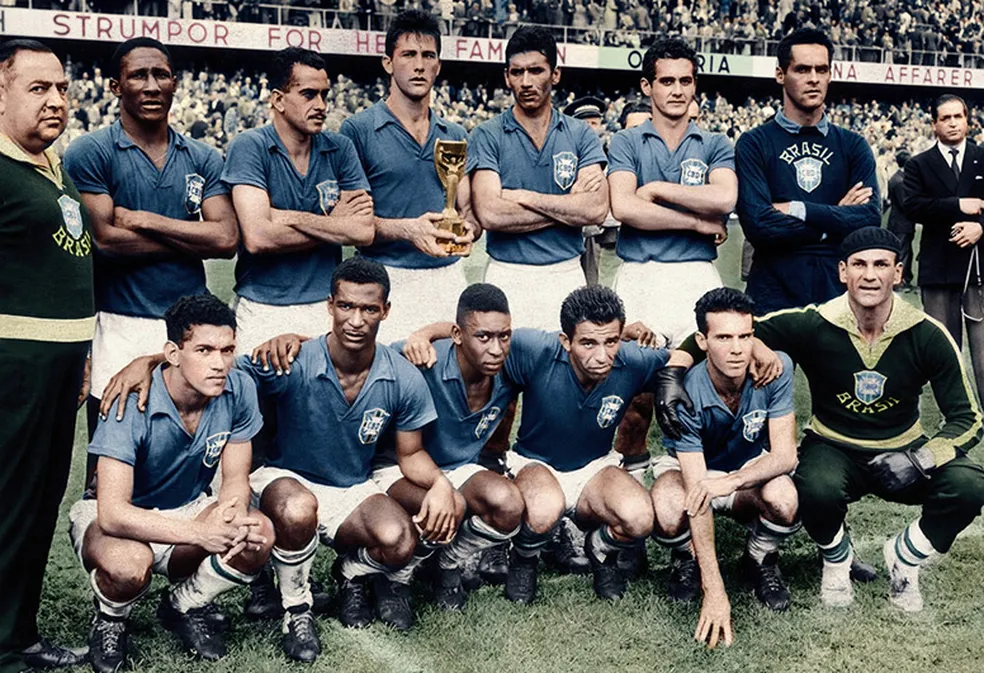
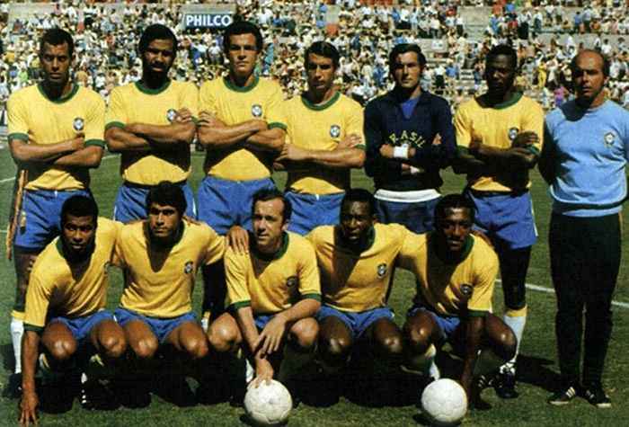
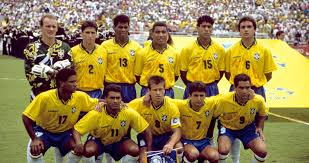
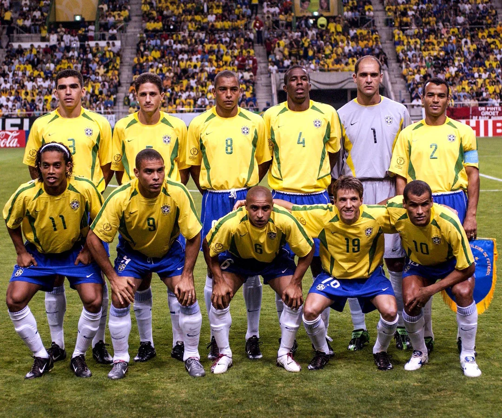

Conquistas
As Cinco Estrelas

1958
Suécia
Pelé, 17 anos, marca 2 na final. Brasil 5×2 Suécia.
Pelé — 17 anos
Garrincha
★ I

1962
Chile
Garrincha carrega o Brasil. Pelé se machuca na 2ª rodada.
Garrincha MVP
Vavá
★ II

1970
México
A melhor seleção da história. 6 jogos, 6 vitórias, 19 gols.
Pelé tricampeão
Rivelino
★ III

1994
Estados Unidos
24 anos de espera. Romário e Bebeto. Tetra nos pênaltis contra a Itália.
Romário MVP
Bebeto
★ IV

2002
Coreia do Sul · Japão
O PENTA! Ronaldo marca 2 na final. 7 jogos, 7 vitórias.
Ronaldo 8 gols
Rivaldo
Ronaldinho
★ V